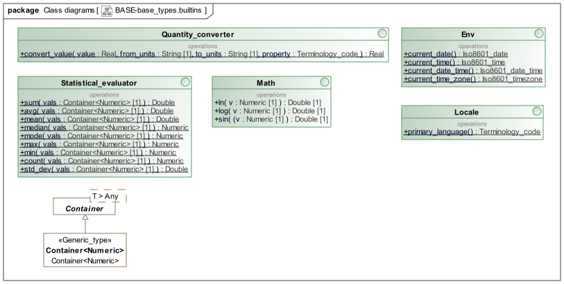

Builtins Package Overview The BASE.base_types.builtins package includes interface classes that provide common utility functions. It is shown below.  Figure 1. base.base_types.builtins Package Class Definitions Env Interface Interface Env Description Class representing the real-world environment, providing basic information like current time, date, etc. Functions Signature Meaning 1..1 current_date (): Iso8601_date Return today’s date in the current locale. 1..1 current_time (): Iso8601_time Return current time in the current locale. 1..1 current_date_time (): Iso8601_date_time Return current date/time in the current locale. 1..1 current_time_zone (): Iso8601_timezone Return the timezone of the current locale. Locale Interface Interface Locale Description Class representing current Locale. Functions Signature Meaning 1..1 primary_language (): Terminology_code Primary language of the current locale. Statistical_evaluator Interface Interface Statistical_evaluator Description A basic statistical evaluator class providing common functions on collections of numbers. Functions Signature Meaning 1..1 sum ( vals: Container<Numeric>[1] ): Double Sum of a container of values. 1..1 avg ( vals: Container<Numeric>[1] ): Double Synonym for mean(). 1..1 mean ( vals: Container<Numeric>[1] ): Double Mean (arithmetic average) of a container of values. 1..1 median ( vals: Container<Numeric>[1] ): Numeric Return numerically centre value in ordered form of container contents. 1..1 mode ( vals: Container<Numeric>[1] ): Numeric Mode (most frequent) of a container of values. 1..1 max ( vals: Container<Numeric>[1] ): Numeric Maximum of a container of values. 1..1 min ( vals: Container<Numeric>[1] ): Numeric Minimum of a container of values. 1..1 count ( vals: Container<Numeric>[1] ): Numeric Return the number of items in vals, i.e. vals.count. 1..1 std_dev ( vals: Container<Numeric>[1] ): Double Compute standard deviation of a container of values. Math Interface Interface Math Description Mathematical computation. Functions Signature Meaning 1..1 ln ( v: Numeric[1] ): Double Compute natural log of v. 1..1 log ( v: Numeric[1] ): Double Compute base 10 log of v. 1..1 sin ( (v: Numeric[1] ): Double Compute sin(v). Quantity_converter Interface Interface Quantity_converter Description Quantity conversion. Functions Signature Meaning 1..1 convert_value ( value: Real[1], from_units: String[1], to_units: String[1], property: Terminology_code[1] ): Real Convert value of physical property type (e.g. 'pressure' etc) from one units to another. Definitions Package Identification Package